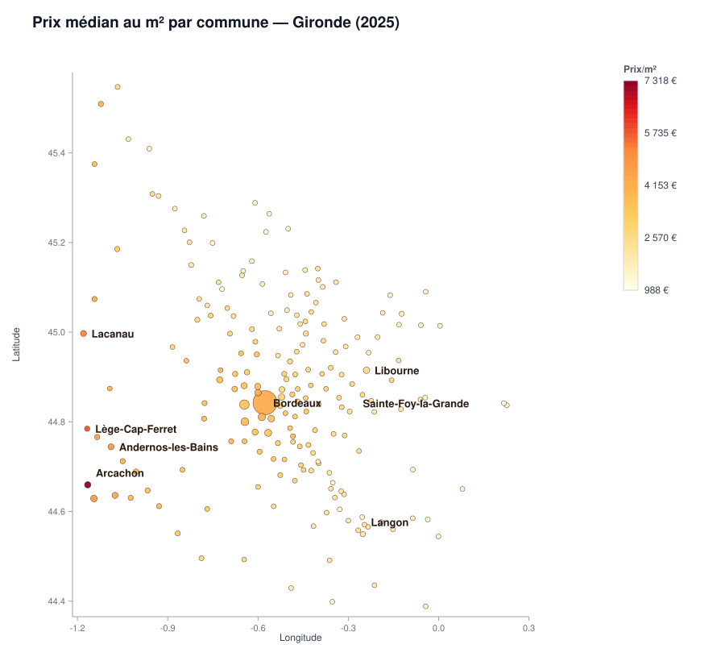

Analyse du marché immobilier girondin à partir des données DVF (Demandes de valeurs foncières) 2025, publiées par la DGFiP sur data.gouv.fr — 20 074 ventes exploitables, agrégées par commune, par mois et par zone.

Chaque point est une commune avec au moins 10 ventes sur 2025 (196 communes sur 487). La couleur indique le prix médian au m², la taille le volume de ventes.
Entre Sainte-Foy-la-Grande (988 €/m²) et Arcachon (7 318 €/m²), le rapport est de 1 à 7. Les cinq communes les moins chères sont toutes à l'intérieur des terres, les cinq plus chères toutes sur le littoral.
Le prix médian reste stable toute l'année (±3 % autour de 3 400–3 500 €/m²) : il n'y a pas de « bon mois » pour négocier un prix nettement plus bas. En revanche, le volume de ventes varie beaucoup : juillet et octobre concentrent le plus de transactions, tandis que mai et janvier sont plus calmes. Novembre affiche le prix médian le plus bas de l'année (3 312 €/m²), mais l'écart avec le reste de l'année reste faible.
À budget fixe (250 000 €), voici la surface que vous pouvez obtenir selon la zone : ce budget achète 59 m² à Bordeaux, 46 m² sur le Bassin d'Arcachon, ou 112 m² dans le Libournais rural.
| Zone | Prix médian /m² | Surface pour 250 000 € | Ventes |
|---|
Appartements : 3 625 €/m² médian, 52 m² type. Maisons : 3 212 €/m² médian, 94 m² type.
Demandes de valeurs foncières géolocalisées (DVF), data.gouv.fr / DGFiP, Licence Ouverte 2.0.
Ventes classiques uniquement (hors VEFA, échanges, expropriations) ; maisons et appartements ; mutations à un seul lot (pour un prix au m² fiable) ; valeurs aberrantes retirées (1er/99e centile). Résultat : 20 074 ventes exploitables sur 111 712 lignes brutes.
Aucune adresse ni vente individuelle n'est affichée. Toutes les figures sont des agrégats par commune ou par mois, avec un seuil minimum de 10 ventes par commune pour la fiabilité statistique et pour éviter toute réidentification.
Analyse portant sur une seule année (2025) et un seul département. Les petites communes (moins de 10 ventes) sont exclues des figures par commune, faute d'échantillon suffisant.